Lists for Dark Web Addresses
In this lecture, we'll be talking about a few of the main list resources you can use. Of course, apart from the resources here, you can also get new addresses on various forums and blogs according to your interests. So please see these lists only as reference sources for a start.
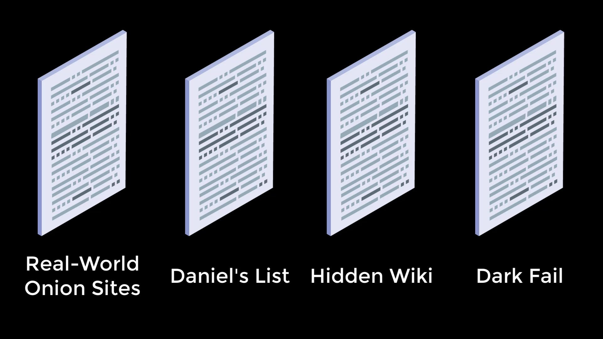
Real-World Onion Sites
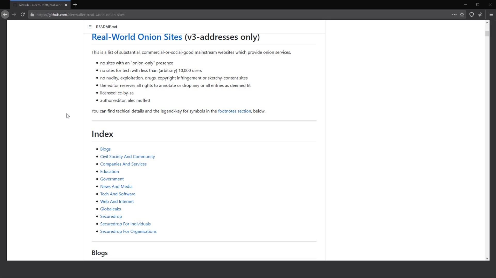
This is a list of substantial, commercial-or-social-good mainstream websites which provide onion services.
https://github.com/alecmuffett/real-world-onion-sites
This list contains public address information that is voluntarily updated regularly. The address of many widely used websites in many categories is available here. As you can see, you can learn the onion address information of many popular services. If you want to browse these websites anonymously, the list here will help you access real onion address information.
If you want to contribute to this list, you can create new issue on issue tab to add new address or correct existing mistakes. You can also see that there are many addresses that have already been shared. You can too contribute to the project through your Github account.
Daniel's List
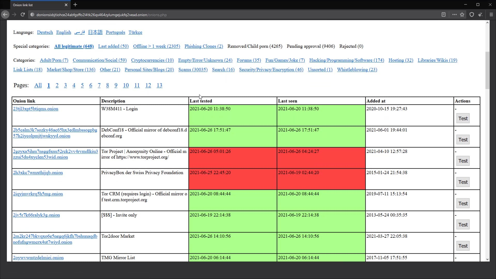
Daniel's list is an useful resource to help you discover various onion service links. I think this list really helpful compared to its alternatives. This website lists a lot of onion links which are categorized to make browsing easier. Moreover, it has a very useful built-in functionality which lets you know whether a particular website is online.
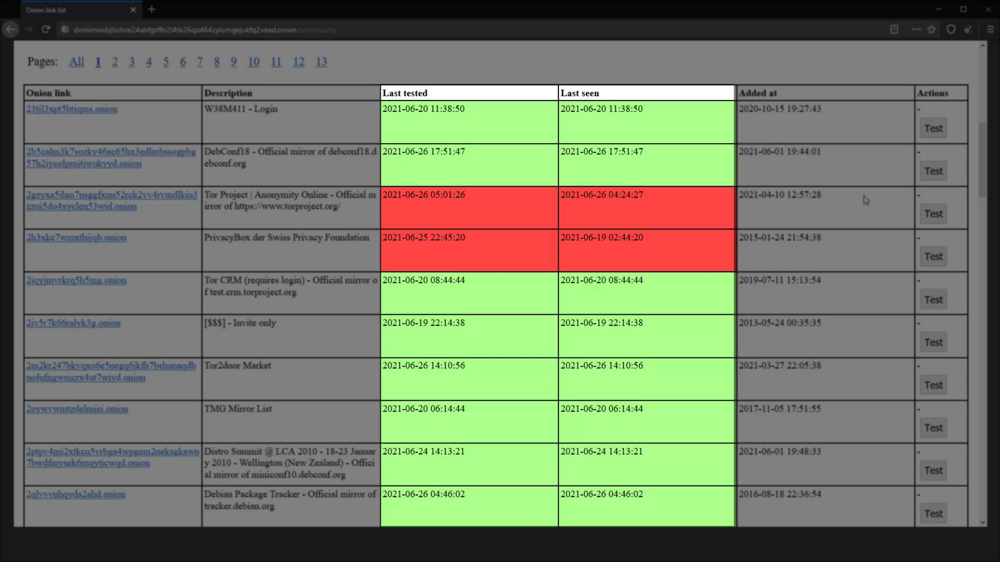
This is very useful, as it means you don’t need to click and load every dark web link listed to see if it’s working. Especially with the potentially long loading times of the Tor browser, this is a great feature. To see how many addresses are on the list, just take a look at it. If necessary, you can also search website you want from the search bar here. For example, when I do search "mail", email services are listed as you can see.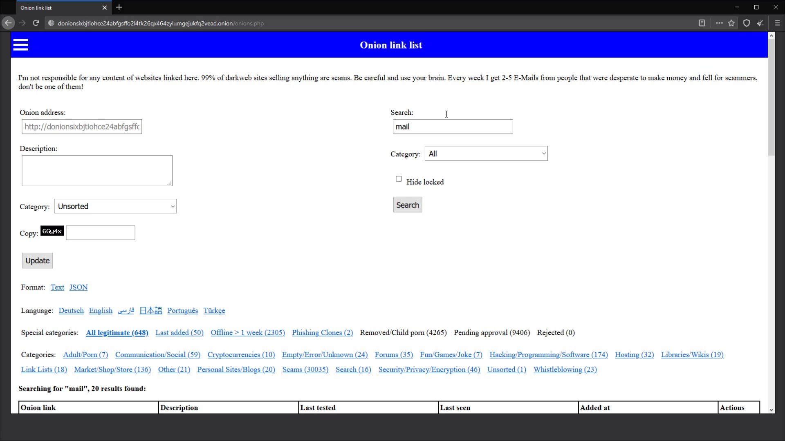
Also heed the warning here, be careful about dark websites. Many of them can be scams. The fact that web addresses are on this list doesn't mean that these websites are safe. For this reason, you should always act carefully.Onion Service: http://danielas3rtn54uwmofdo3x2bsdifr47huasnmbgqzfrec5ubupvtpid.onion/
Hidden Wiki
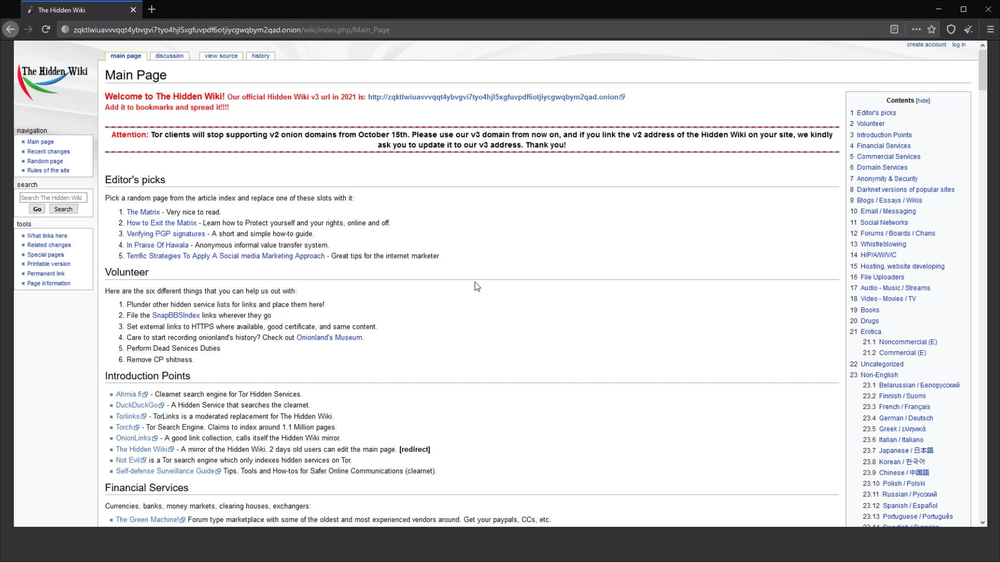
You can use the " hidden wiki " resource for the main link addresses that are categorized .
Onion Service: http://zqktlwiuavvvqqt4ybvgvi7tyo4hjl5xgfuvpdf6otjiycgwqbym2qad.onion/
Although most of the websites in this list have up-to-date address information, it may be that some links don't work for various reasons. Nevertheless, we can say that it is the source that provides the most information among the alternatives.
Also, please be aware that the addresses listed may not be legal or secure.
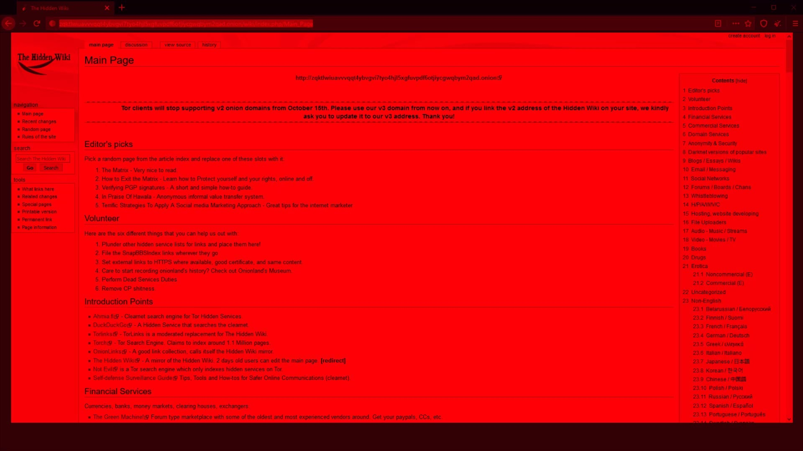
Only the most frequently used ones are on this list. So it wouldn't be right to blindly trust the list here. Also, make sure you are visited to the real hidden wiki address, as there are many malicious copies of the hidden wiki address. Using fake ones can put your security at risk.Dark Fail
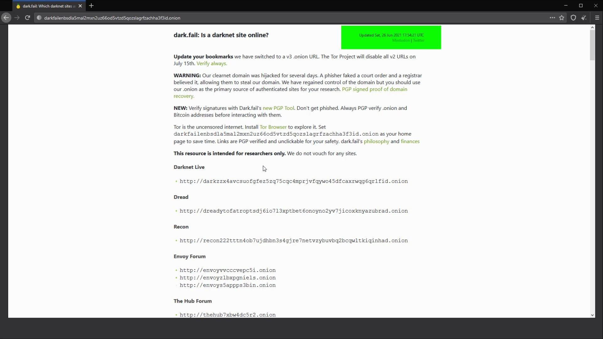
After the hidden wiki resource, this is the most preferred list. Moreover, since it is updated frequently, it provides much more up-to-date address information compared to hidden wiki resources. You can also use this website to confirm the addresses on the hidden wiki when necessary. You can test real web addresses with this simple comparison, as fake or outdated address information won't be the same in two lists.
Onion Service: darkfailenbsdla5mal2mxn2uz66od5vtzd5qozslagrfzachha3f3id.onion
Apart from these addresses, you can also browse lists shared by people from platforms such as Reddit and add links to your own list if they are the kind of addresses you will often use.

There are many information sharing channels about onion services on Reddit. If you haven't used Reddit before, you can see how easy it is to use with a short glance and use it as a resource you will benefit from.
You can access a lot of address information by using the search bar on the Reddit platform or by joining communities such as " Deep Web ", " Darknet " and " Onions ".
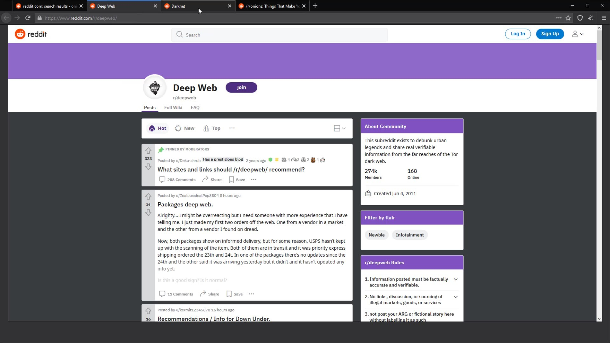
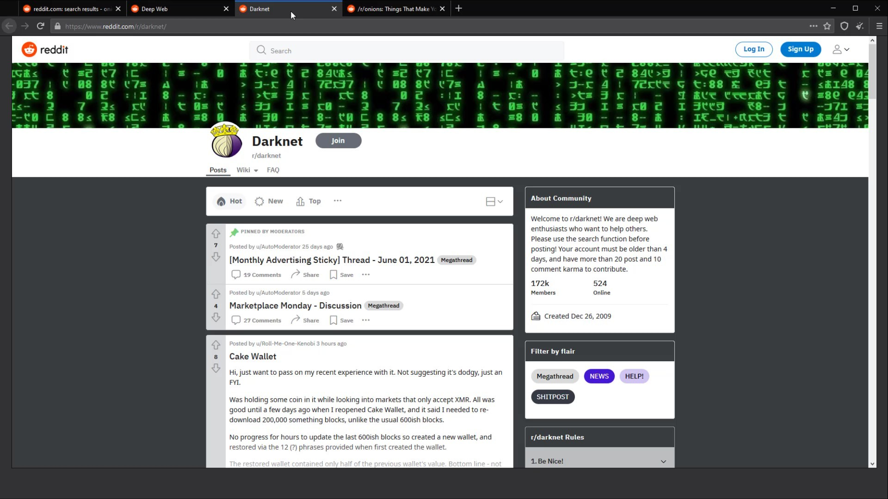
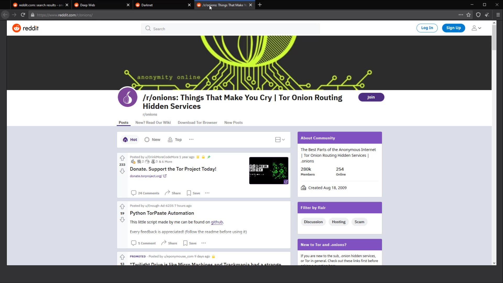
You can also get new addresses in many different ways, apart from platforms like "Reddit" and "Hidden Wiki". However, unfortunately, due to tor's security architecture, it is not possible to find a resource where everything is collected in one area. Anyway, tor doesn't want all onion addresses to be easily exposed, so it uses long and complex character domains. So the reason why onion addresses are hard to find is purely for security reasons.
According to your interests, you need to discover these web addresses by yourself over time and write them in your address list.
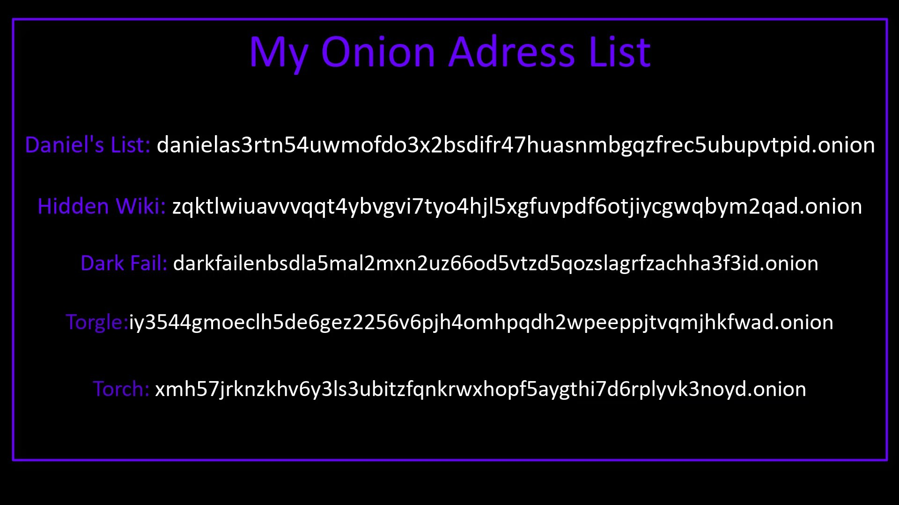
What you need to be careful about with new addresses you find, is to confirm whether this address is the original address from more than one source, if possible. In this way, you will have a clean list of the addresses you use frequently over time.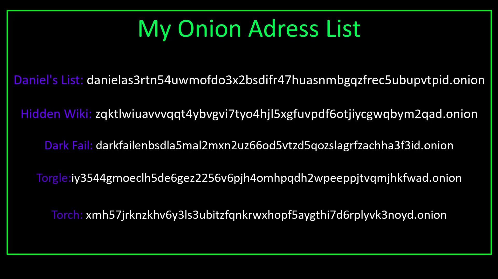
However, you may need to update your list frequently due to changing addresses and unprofessional interrupted services on the dark web. This is one of the main reasons why browsing on the dark web is cumbersome.About ".onion" Addresses with Meaningful and Meaningless
While browsing the Tor hidden services, we witnessed that, with some exceptions, many onion services have domains with full meaningless characters.
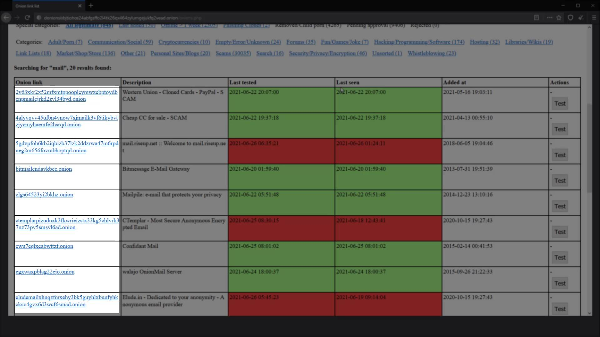
What is the reason for the existence of both meaningful and meaningless domain names and the imbalance in their number of character length?In fact, normally, these domain names are randomly generated by applying the method determined by the Tor service, depending on security reasons.
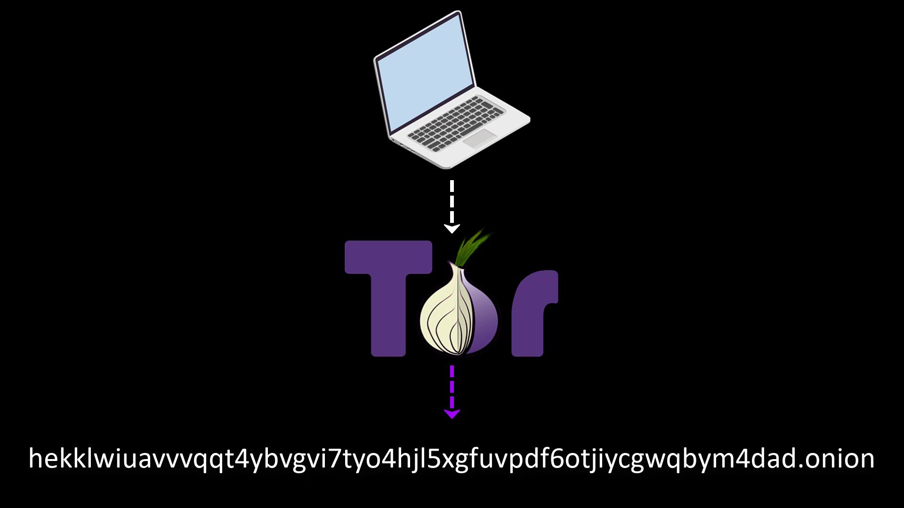
In other words, nobody has the opportunity to choose in the domain name. Still, If we want a vanity domain name, we can create a vanity domain name by generating it over and over again. However, since this number of retries requires very high processing power, it isn't an operation that everyone can do. You can see how much processing power it may require by looking at the list.The average time calculation of how long it will take to create the desired characters using a 1.5 GHz processor is as in the list.
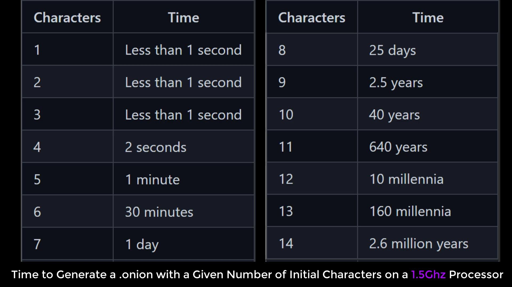
It's also unreasonable to try to produce a fully meaningful domain name as the tor developer has increased the domain length from 16 characters to 56 characters in the new version.
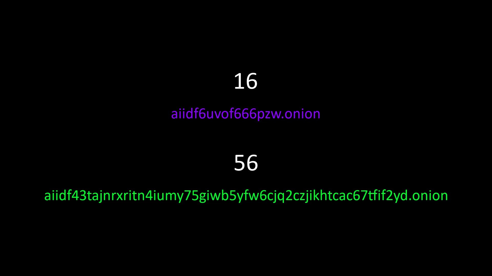
We explained the reason for meaningful and meaningless domain names. Now let's explain the reason for difference character lengths in domain names.
For security reasons, onion domain names are produced with a complexity and length that cannot be found by fuzzing methods. If you are curious about the technical details of this topic, you can read the official documentation from the link in the lecture resources.
Domain names with 16 characters are referred to as V2, while domain names with 56 characters are referred to as V3.
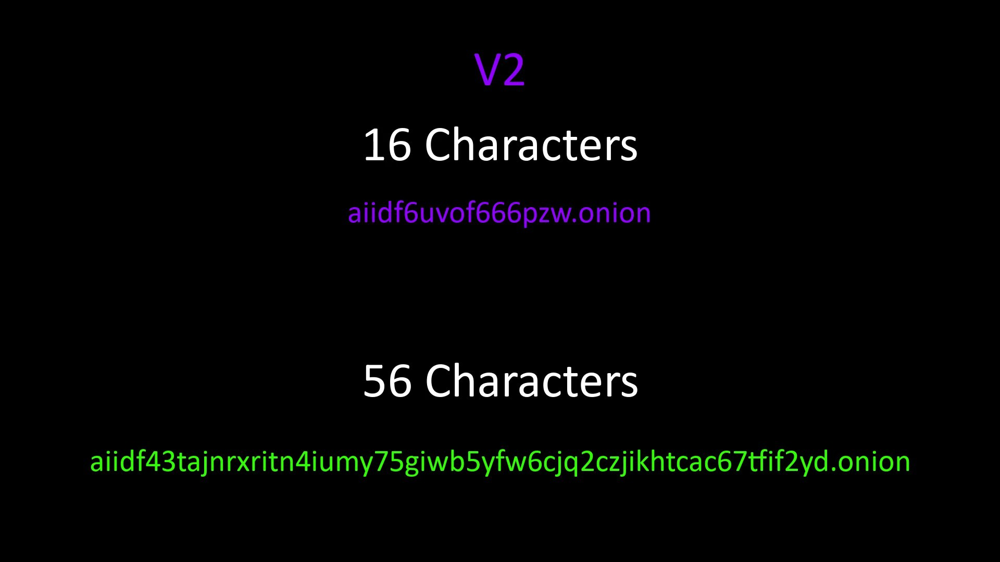
Although V3 is recommended by Tor as it provides an extra security measure compared to the old one, it is possible to use the old addressing system, namely the V2 system. But, Tor developers have announced that they won't support v2 from the "October 15th, 2021" release.
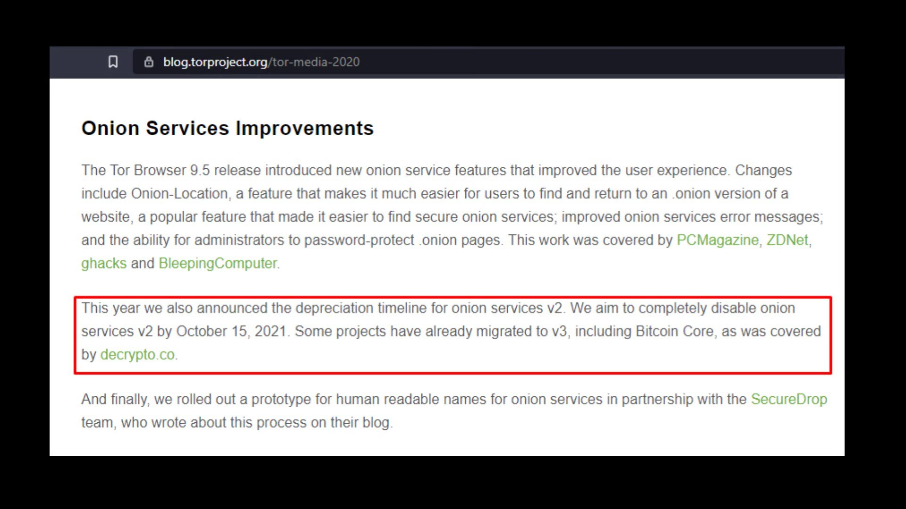
Therefore, domain addresses generated with v2 will no longer be in use. So if you encounter v2 addresses and this link address doesn't work, the reason is that v2 addresses are no longer supported.